A step-by-step look at every part of the process — from importing your roster to handing off final class lists.
Classify accepts a CSV export from any student information system — PowerSchool, Infinite Campus, Aeries, or a plain spreadsheet. A guided wizard walks you through mapping your column names and values to Classify's fields. No reformatting required.
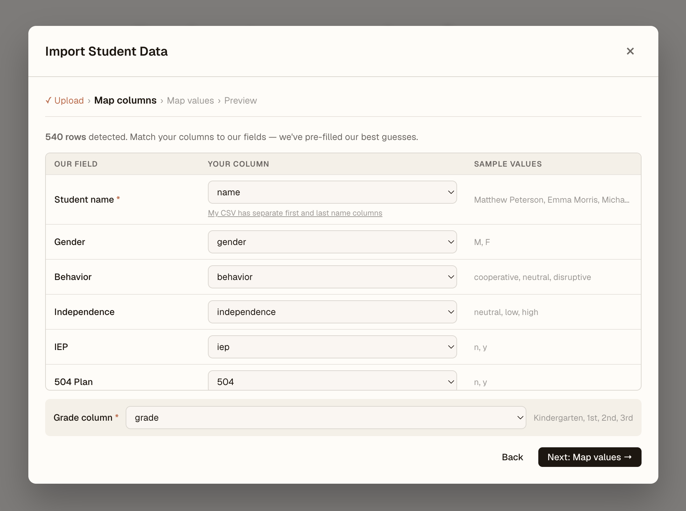
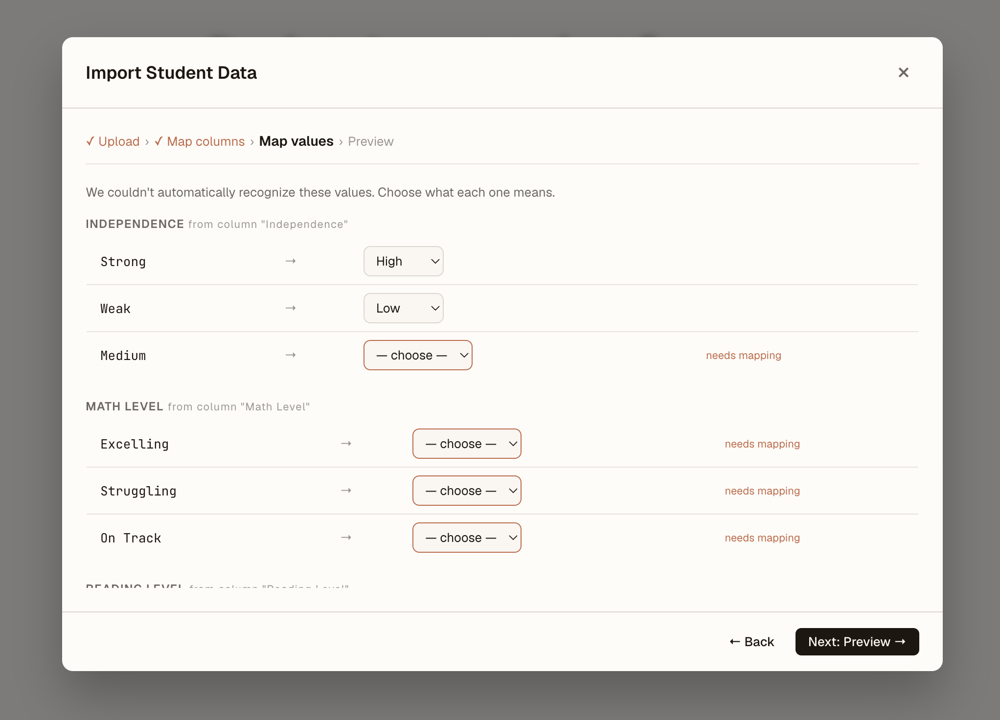
The import wizard detects your columns and lets you map them to Classify's fields. Values like "Yes/No" or "High/Med/Low" are mapped once and remembered.
Every student in a grade is listed in the roster view. Click any student to open their detail panel — where you can view and edit all their properties, add friendship pairs, mark separations, set previous teachers, and add private notes that carry forward to next year.
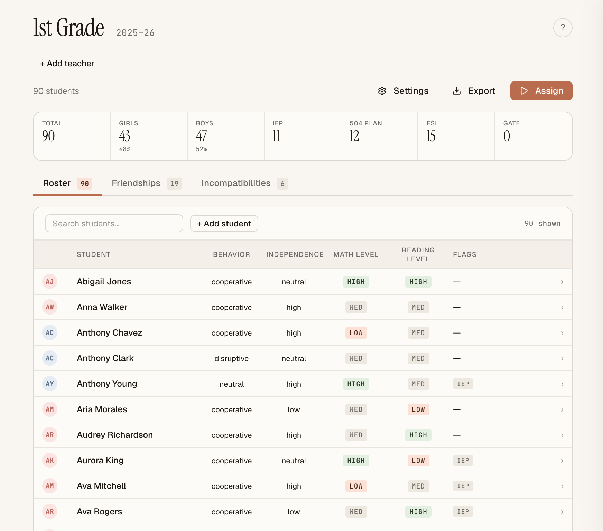
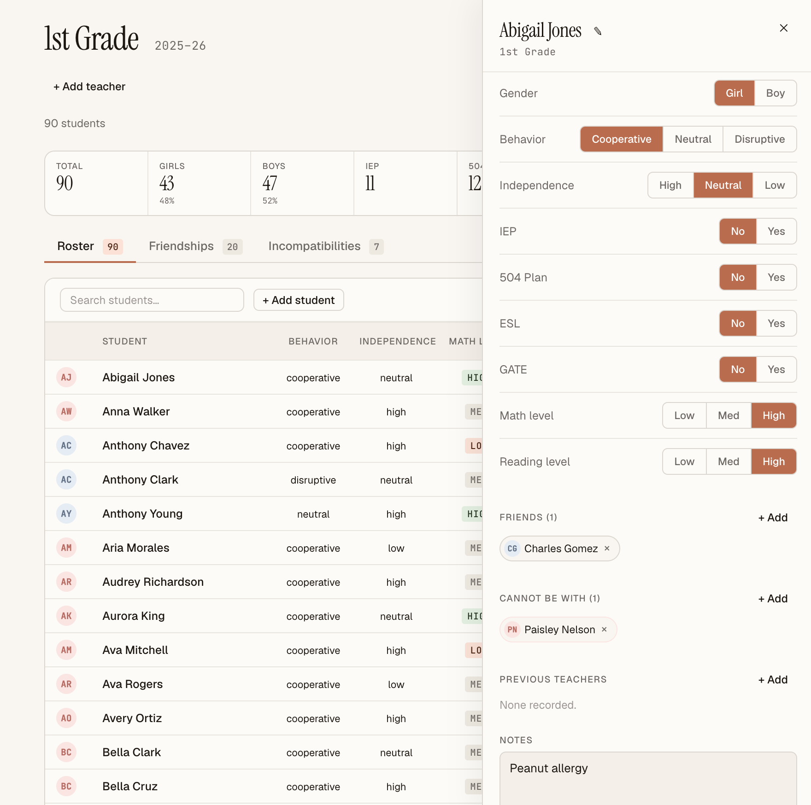
Properties include gender, behavior, independence, IEP, 504, ESL, GATE, math level, reading level, and any custom attributes your school has defined.
For each grade, tell Classify how many classes to create, the target class size, and which teachers are available. Classify will optimize teacher placements alongside student placement — keeping siblings, past-teacher conflicts, and teacher uniqueness rules in mind.
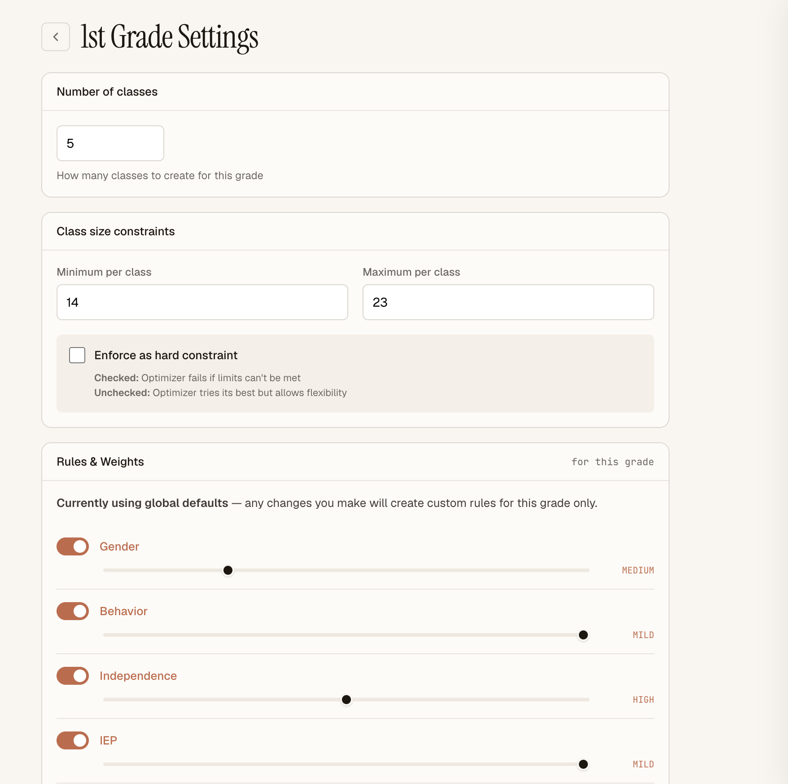
The optimizer balances every factor simultaneously — but not all factors are equally important at every school. Use the weights screen to tell Classify what matters most. You can also toggle individual factors on or off entirely, and mark friendship and separation rules as hard constraints the optimizer will never break.
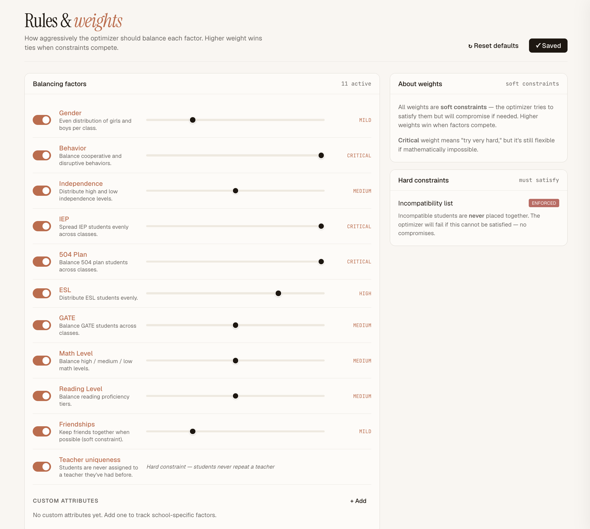
Weights can be set school-wide and overridden per grade. A 3rd grade team might weight reading level heavily; Kindergarten might prioritize gender balance above all else.
One click kicks off the solver. Classify explores an enormous number of possible arrangements and finds the best one given your weights and constraints. For a typical grade of 80–120 students across 4–5 classes, it completes in seconds.
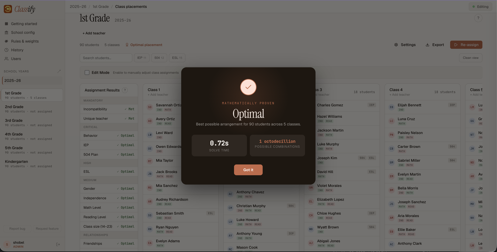
The optimizer shows its progress in real time. Once complete, you're taken straight to the results view.
The results view shows every student placed into their class, alongside a full balance report. For each factor, you can see how evenly it's distributed across all classes — and defend any placement decision with data.
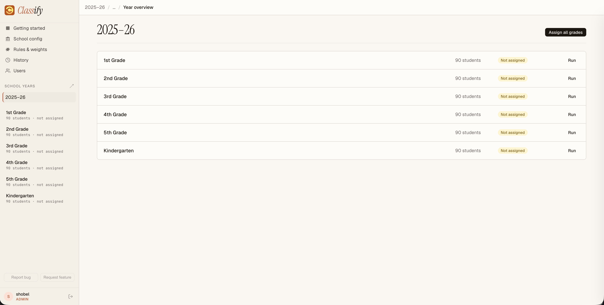
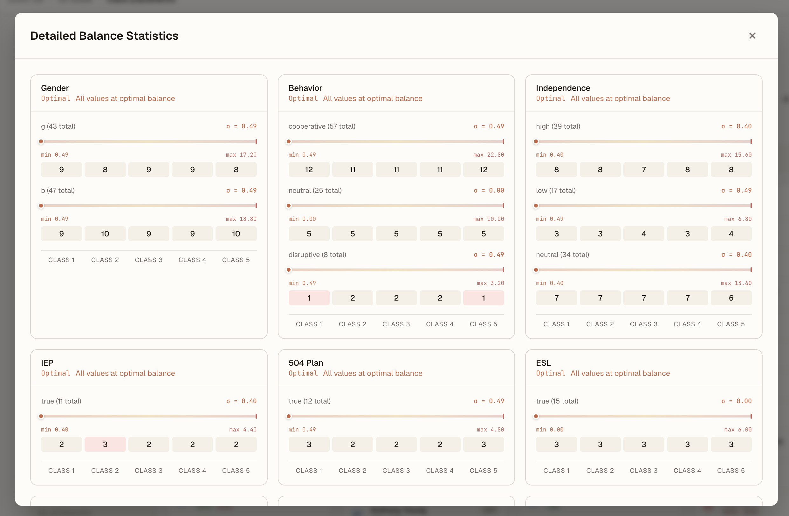
No algorithm knows everything. After the optimizer runs, you can drag any student from one class to another. The balance report updates live as you make changes, so you can see the impact of every move before you commit.
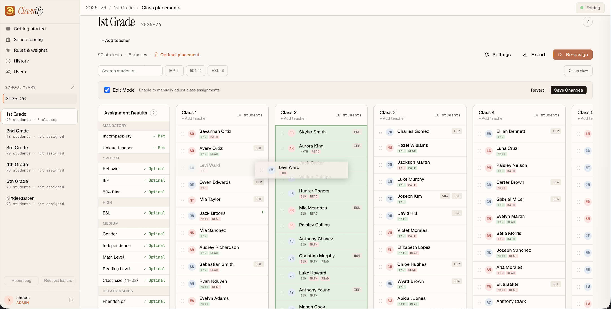
Every teacher and assistant with an account can open Classify in their browser and see the current roster and placements. Only one person edits at a time — an active lock indicator shows who's in control, and everyone else sees changes appear in real time.
Teachers access Classify through their browser at the school's local network address — no app to install, no account on our servers.
Admins control who has access. Adding a staff member generates a one-time invite code — they visit a setup page, pick their own username and password, and they're in. Roles can be adjusted at any time, and accounts can be removed instantly.
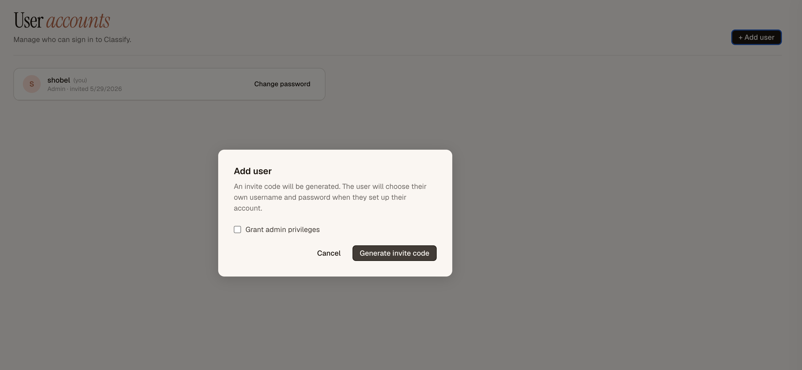
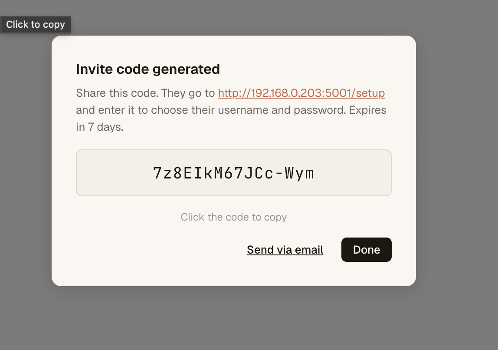
When the new year starts, one click promotes every student to their next grade — preserving all their data, notes, and history. Previous year records stay intact and accessible. Kindergarten is reset and ready for new students.
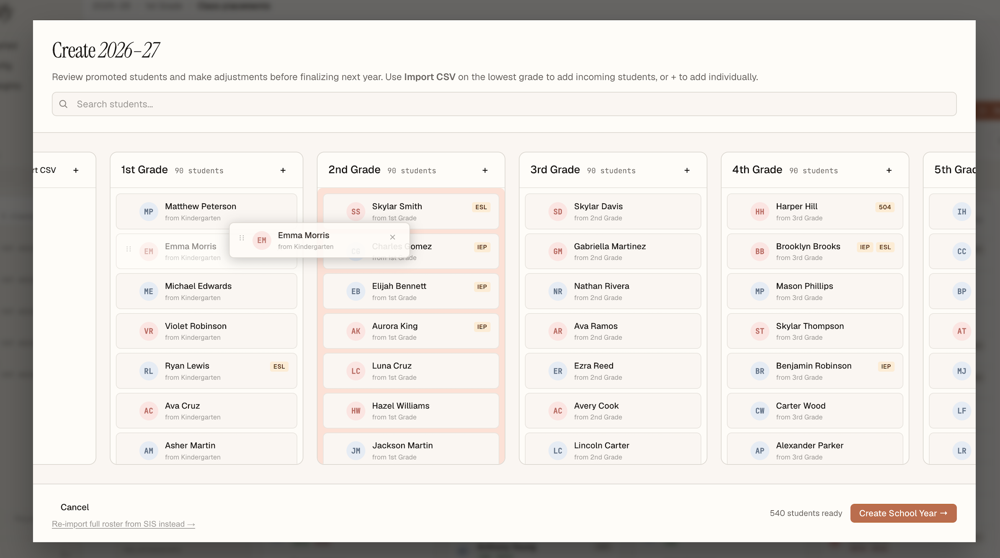
All school years remain accessible — you can review any past year's placements at any time.
Get in touch and we'll walk you through setup and pricing.
Get in touch